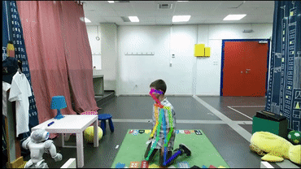

|
Georgia Chalvatzaki I am a PostDoc at IAS working with Jan Peters at TU Darmstadt. I received my PhD from NTUA in Athens, Greece, where I was advised by Costas S. Tzafestas and co-supervised by Petros Maragos. |

|
|
Georgia Chalvatzaki I am a PostDoc at IAS working with Jan Peters at TU Darmstadt. I received my PhD from NTUA in Athens, Greece, where I was advised by Costas S. Tzafestas and co-supervised by Petros Maragos. |
|
|
Orientation Attentive Robot Grasp Synthesis |

|
i-Walk Intelligent Assessment System: Activity, Mobility, Intention, Communication
bibtex
@article{chalvatzakiwalk,
title={i-Walk Intelligent Assessment System: Activity, Mobility, Intention, Communication},
author={Chalvatzaki, Georgia and Koutras, Petros and Tsiami, Antigoni and Tzafestas, Costas S and Maragos, Petros},
booktitle={Proc. European Conference on Computer Vision Workshops (ECCVW)},
year={2020}
}
|
|
How to track your dragon: A Multi-Attentional Framework for real-time RGB-D 6-DOF Object Pose Tracking
bibtex
@inproceedings{marougkas2020track,
title={How to track your dragon: A Multi-Attentional Framework for real-time RGB-D 6-DOF Object Pose Tracking},
author={Marougkas, Isidoros and Koutras, Petros and Kardaris, Nikos and Retsinas, Georgios and Chalvatzaki, Georgia and Maragos, Petros},
booktitle={Proc. European Conference on Computer Vision Workshops (ECCVW)},
year={2020}
}
|
|
Learn to adapt to human walking: A Model-based Reinforcement Learning Approach for a Robotic Assistant Rollator
bibtex
@article{chalvatzaki2019learn,
title={Learn to adapt to human walking: A Model-based Reinforcement Learning Approach for a Robotic Assistant Rollator},
author={Chalvatzaki, Georgia and Papageorgiou, Xanthi S and Maragos, Petros and Tzafestas, Costas S},
journal={IEEE Robotics and Automation Letters},
volume={4},
number={4},
pages={3774--3781},
year={2019},
publisher={IEEE}
}
|
|  |
A Deep Learning Approach for Multi-View Engagement Estimation of Children in a Child-Robot Joint Attention Task
bibtex
@article{hadfield2018deep,
title={A Deep Learning Approach for Multi-View Engagement Estimation of Children in a Child-Robot Joint Attention Task},
author={Hadfield, Jack and Chalvatzaki, Georgia and Koutras, Petros and Khamassi, Mehdi and Tzafestas, Costas S and Maragos, Petros},
journal={arXiv preprint arXiv:1812.00253},
year={2018}
}
|

|
Lstm-based network for human gait stability prediction in an intelligent robotic rollator
bibtex
@inproceedings{chalvatzaki2019lstm,
title={Lstm-based network for human gait stability prediction in an intelligent robotic rollator},
author={Chalvatzaki, Georgia and Koutras, Petros and Hadfield, Jack and Papageorgiou, Xanthi S and Tzafestas, Costas S and Maragos, Petros},
booktitle={2019 International Conference on Robotics and Automation (ICRA)},
pages={4225--4232},
year={2019},
organization={IEEE}
}
|
|
Augmented human state estimation using interacting multiple model particle filters with probabilistic data association
bibtex
@article{chalvatzaki2018augmented,
title={Augmented human state estimation using interacting multiple model particle filters with probabilistic data association},
author={Chalvatzaki, Georgia and Papageorgiou, Xanthi S and Tzafestas, Costas S and Maragos, Petros},
journal={IEEE Robotics and Automation Letters},
volume={3},
number={3},
pages={1872--1879},
year={2018},
publisher={IEEE}
}
|